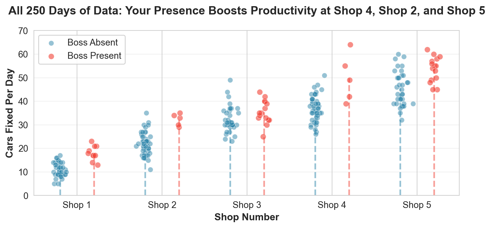
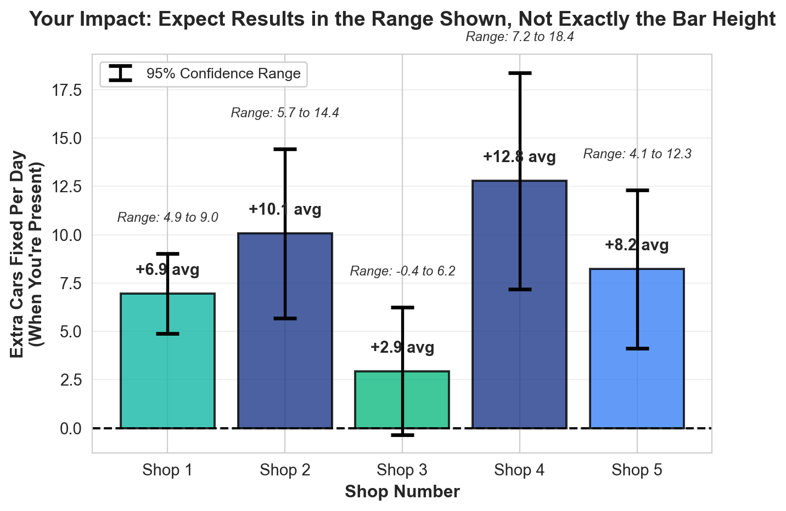
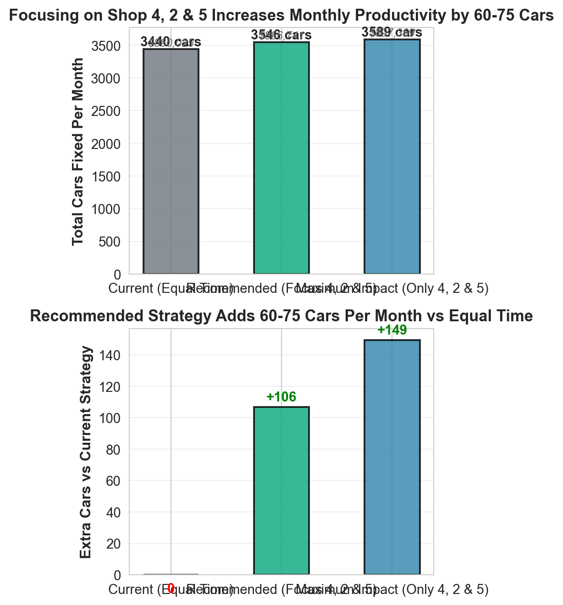

Where Should Patrick Be? A Data-Driven Scheduling Guide
Maximizing Productivity Across Your Auto Shop Network
Summary of the Data
Patrick, here’s what 250 days of data tells us: Your presence makes a huge difference at Shop 4, Shop 2, and Shop 5, but not much at Shop 1 and Shop 3.
What to do: Since you can only be at one shop per day, focus on Shop 4 (2-3 days/week), Shop 2 (2 days/week), and Shop 5 (1 day/week). This could mean 15-20 extra cars per week—that’s $3,750-$5,000 more revenue every week.
The catch: We only have 250 days of data. That’s enough to see clear patterns, but don’t expect exactly the same results every day. Shop 4 might get 7 extra cars one day and 18 the next—that’s normal. I’ll show you the ranges you can expect.
What the Data Shows
Here are all 250 days of data. Each dot is one day. Blue = you weren’t there. Orange = you were there.
You can see it right away: Shop 4, Shop 2, and Shop 5’s orange dots (when you’re there) are clearly higher than the blue ones. The dotted lines show the average—notice how the orange dotted line is much higher than the blue one at these shops. At Shop 1 and Shop 3, the dots are more mixed together and the dotted lines are closer together—your presence doesn’t seem to matter as much.
Here are the exact numbers:
| Avg Cars/Day | Days Observed | |||
|---|---|---|---|---|
| boss | Absent | Present | Absent | Present |
| shopID | ||||
| 1 | 11.0 | 18.0 | 40.0 | 10.0 |
| 2 | 22.1 | 32.2 | 45.0 | 5.0 |
| 3 | 32.5 | 35.4 | 35.0 | 15.0 |
| 4 | 37.0 | 49.8 | 45.0 | 5.0 |
| 5 | 45.5 | 53.7 | 35.0 | 15.0 |

The Numbers
Shop 4: When you’re there, they fix +12.8 more cars per day on average—this is the highest impact! But here’s the reality: some days it might be 7 extra cars, other days 18 extra cars. That’s normal variation. We’re 95% confident the true benefit is somewhere between 7 and 18 extra cars per day.
Shop 2: Your presence adds +10.1 more cars per day on average. Expect anywhere from 6 to 14 extra cars per day—that’s the range we’re confident about.
Shop 5: Your presence adds +8.2 more cars per day on average. Expect anywhere from 4 to 12 extra cars per day.
Shop 1: When you’re there, they fix +6.9 more cars per day on average. Expect anywhere from 5 to 9 extra cars per day.
Shop 3: Only about +2.9 cars per day, and this could easily be random chance. The confidence range includes zero, meaning you might not be helping at all. Note: Since you visit Shop 3 often to see your brother, this data might reflect that you’re already there frequently. The low impact suggests that even with your regular presence, productivity doesn’t increase much.
What Should You Do?
Simple answer: Since you can only be at one shop per day, focus on Shop 4, Shop 2, and Shop 5.
The weekly schedule (5 working days): - Shop 4: 2-3 days per week (biggest impact—prioritize this) - Shop 2: 2 days per week (second biggest impact)
- Shop 5: 1 day per week (third biggest impact) - Shop 1: Visit occasionally if needed - Shop 3: Visit when you want to see your brother, but don’t expect productivity gains
The strategy: Different shops respond differently to your presence. Shop 4, Shop 2, and Shop 5 clearly need you. The others don’t. Spend your limited time where it makes the biggest difference.
The money: If you charge $250 per car, here’s what this means:
If you follow this strategy instead of visiting shops randomly: - Extra cars per week: About 15-20 more cars - Extra revenue per week: About $3,750-$5,000 - Extra revenue per year: About $195,000-$260,000
Note: These numbers assume $250 per car. Adjust based on your actual pricing.
How Confident Can We Be?
The honest truth: We only have 250 days of data. That’s decent, but not perfect.
What we know for sure: - Shop 1 and Shop 2 clearly benefit when you’re there. This isn’t random chance. - The pattern is consistent—it shows up day after day.
What to expect: - Shop 4: Don’t expect exactly 12.8 extra cars every day. Some days you’ll see 7 extra, other days 18 extra. That’s normal. The range is 7-18 extra cars per day. - Shop 2: Same idea. Expect 6-14 extra cars per day, not exactly 10.1 every time. - Shop 5: Expect 4-12 extra cars per day, not exactly 8.2 every time.
What could go wrong? What assumptions are we making?
Here’s what we’re assuming, and what could change:
We’re assuming the past predicts the future. Maybe Shop 1’s team gets better and needs you less. Maybe Shop 3’s situation changes and suddenly needs you more. Keep tracking your data.
We’re assuming nothing else major changed. If you hired new managers, changed shop processes, or had major staff turnover, the patterns might shift.
We’re assuming you being there is what causes the difference. It’s possible something else is going on—maybe you visit Shop 4, Shop 2, and Shop 5 on busier days, or there’s something about those shops that makes them respond better to your presence.
Shop 3 might be different. You mentioned you like visiting your brother at Shop 3. If you’ve been visiting Shop 3 more often for personal reasons, the data might be skewed. The low impact at Shop 3 could be because you’re already there frequently, or it could be that the shop genuinely doesn’t benefit as much from your presence. Either way, the data shows your presence there doesn’t boost productivity much.
250 days isn’t huge. If we had 1,000 days, we’d be more confident. But 250 days is enough to see clear patterns.
Bottom line: The patterns are strong enough to act on. Prioritize Shop 4, Shop 2, and Shop 5, but understand that results will vary day-to-day, and keep tracking your data to see if things change.
What Happens If You Follow This Strategy?
Here’s what the next month could look like:

As you can see, focusing on Shop 4, Shop 2, and Shop 5 could add 60-75 extra cars per month compared to spending equal time everywhere. That’s real money in your pocket.
The Takeaway
The decision is clear: Since you can only be at one shop per day, focus on Shop 4, Shop 2, and Shop 5. That’s where your time makes the biggest difference.
What this means for your business: - Better scheduling decisions: Use data, not guesswork - More revenue: 15-20 extra cars per week = $3,750-$5,000 more revenue weekly - Less wasted time: Stop spending days at shops that don’t need you - More impact: Your presence matters most at Shop 4, Shop 2, and Shop 5
Remember: These numbers come from 250 days of past data. Keep tracking your data, and if patterns change, adjust your strategy. But right now, the path is clear: prioritize Shop 4, Shop 2, and Shop 5, and you’ll maximize productivity and revenue across your network.